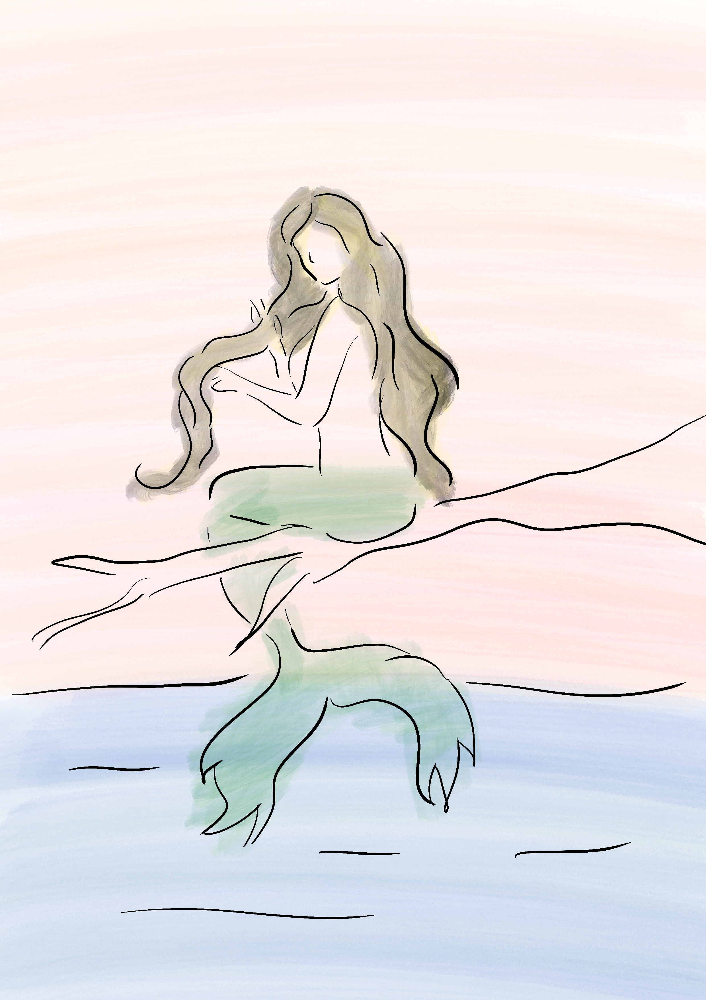

Iara: a lenda
Iara e o Folclore Brasileiro
Dentro do rico universo do folclore brasileiro, Iara assume um lugar de destaque, sendo protagonista de narrativas que abordam temas universais como o amor, o desejo, a traição e a transformação. Por meio da lenda de Iara, são reveladas reflexões sobre a natureza humana, o encanto dos elementos naturais e a complexidade das relações sociais e ambientais.
Muitas versões da lenda destacam o poder sedutor de Iara, capaz de fazer com que homens deixem suas famílias e responsabilidades para segui-la até as profundezas dos rios. Essas histórias simbolizam o fascínio pelo desconhecido, o impulso da aventura e os perigos associados à desobediência e à quebra de regras.
Além de seu aspecto encantador, a lenda de Iara carrega uma função educativa, transmitindo valores morais e alertas. As punições sofridas pelos que caem sob seu feitiço reforçam a importância das escolhas e das consequências que elas podem trazer.
Iara não é uma figura isolada, mas faz parte de um conjunto maior de personagens míticos do folclore brasileiro. Sua história se cruza com a de seres como o Curupira, o Boto e a Boiúna, formando um cenário mitológico rico que reflete a diversidade cultural e ecológica do país.

Imagem autoral criada para aula DSG1863